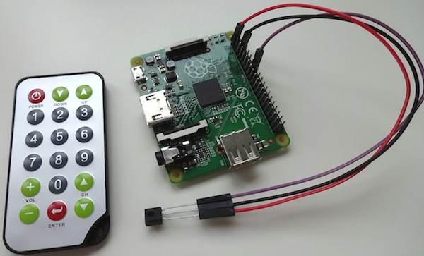
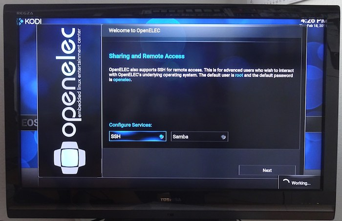
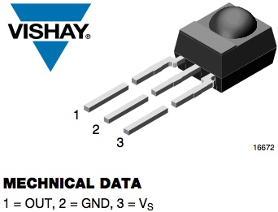

Initially I didn’t thought that this would be a post worth since Raspberry Pi + media center is well documented. By now I know that there is many documentation available and this does not say anything about the quallity ;-)
My target was to get my Raspberry Pi A+ working and accepting commands from a very cute little IR remote (which I got at some point in time but I don’t quite remeber). The following picture shows the basic setup I’m looking for.

I decided to use OpenELEC as a media center os rather than creating my own contraption. So I thought this is straight forward due to many documentation out there. But it turned out not to be that simple and in this post I’ll explain how to set it up correctly and fast.
Background
Quite some time ago I bought me a media player on Amazon. It is a simple Chinese-made one-hung-low construction which simply allows to attach an USB tumb drive and play back the files through an uggly GUI. But it worked quite good now for four to five years, I guess.
"What's your intend?" Well, I like movies and I record broadcasts on TV using various methods. By now I have collected around 3000 TV broadcast records. To watch them I really need a simple way of playing the files back to HDMI to let my big telly display it. And therefore I purchased this nifty little device. Most of this 3000 records use an AVI codec (DX50) with MP3 audio and therefore the quality is SD (standard definition) which takes around 600 MB per 90 minutes.
Recently I thought that the time has come to switch to HD. And there it happened: the media player has huge problems playing back those files which results in a movie consisting of really big pixels with a quallity even worse than SD.
I concluded that this is the reason because of the lack of an proper hardware decoder or something else in the field of lack of power.
Back in november of last year I bought a Raspberry Pi A+ (V1.1) but realized when I got it that it don’t has an ethernet port. So it was more or less useless for the intended action. But furtunately this media center problem arised and I had a new usage for it.
What media distro should I choose?
There is an awful lot of information on this topic in the internet available through a simple Google search.
I tested OSMC but it didn’t work out-of-the box so I skipped it and continued with OpenELEC. OpenELEC worked straight out-of-the box and played back files on my Raspberry Pi A+ really nice even though it hase only 256 MB RAM and runs at 700 MHz.
Since this helped me out some evening I sticked with OpenELEC and I’ll use it in the following. The description in this post confers to the most recent version of OpenELEC:
OpenELEC v6.0.1 MD5 (OpenELEC-RPi.arm-6.0.1.img) = 92d4c77d06c2172d1785253a80f0acf3
What’s the plan master?
There are three objectives to tackle:
- Find a solution to play back HD movies – CHECK: already achieved by using OpenELEC on the Raspberry Pi A+
- Get an arbitrary IR remote working to replace mouse and keyboard. Since the A+ has only one USB port there is no place for other USB devices because the tumb drive with movies occupies this port
- Get rid of the overscan as depicted in the following (see the corners) – ALMOST CHECK: in the system configuration (System > Video not Appearance) there is a little tool to calibrate the screen and correct for this overscan by dragging the edges (top left and bottom right) of the screen to the correct locations with the mouse

Solving problem 2: get the IR remote working
In general: this is simpler than described in various guides around the web. I lost a lot of time following these guides. For me these steps worked quite nice:
(a) Download and write image
Download the current OpenELEC image file from here and burn it to your SD card. I got a very cheap 4GB Kingston card since the image is small and not much else is stored on it. For Mac users: you can follow this explanation to burn the image to the SD card.
By the way: the default credentials for SSH are root as user name and openelec as password and you need to enable SSH either in the welcome wizard or in the system settings, because it’s disabled by default.
(b) Modify the config.txt
To enable an IR receiver to be attached to the GPIO pins the driver software for that must be enabled. This is done by placing the following line
dtoverlay=lirc-rpi,gpio_in_pin=23
at the end of the config.txt file. For that you simply need to attach the SD card with OpenELEC to your computer and open it in an arbitrary file manager. The file config.txt will show up in the root directory of the card and can be edited using a simple text editor.
What does this line do? First of all the lirc-rpi extension is loaded which enables the attachment of IR receivers and transmitters onto the Raspberry Pi. After that arguments for lirc are following. By default lirc uses GPIO Pin 18 for the receiver but this pin doesn’t work for me so I changed it to GPIO Pin 23. It might be worth to take a look on a pinout diagram like this one to find the physical location of the pin.
{kind=link}
(c) Attach the IR receiver to GPIO pins
I bought the TSOP4838 IR receiver on Ebay for little money. This model is very popular and works on 5V and also on 3.3V which is indeed useful for the Raspberry Pi and it’s 5V intolerant pins. The datasheet for the IR receiver can be found here. The pinout is as follows (from the datasheet):

Simply make the connections as indicated on the image at the top.
(d) Booting time!
So boot up the Raspberry Pi with the OpenELEC SD card inserted and connected to the power (obviously) and connected to your LAN since we need to login via SSH.
Follow the welcome wizard, enable SSH and logon. By now you have a clean terminal window open to get the IR receiver working.
To confirm that everything worked just right you can enter dmesg | grep lirc and will become back:
[ 11.288285] lirc_dev: IR Remote Control driver registered, major 245 [ 11.340154] lirc_rpi: module is from the staging directory, the quality is unknown, you have been warned. [ 12.253900] lirc_rpi: auto-detected active low receiver on GPIO pin 23 [ 12.254563] lirc_rpi lirc_rpi: lirc_dev: driver lirc_rpi registered at minor = 0 [ 12.254586] lirc_rpi: driver registered! [ 14.170614] input: lircd as /devices/virtual/input/input2
Everything works, fine!
(e) Grab your IR remote
First of all you need to kill all running lirc processes before you can configure your new remote. So use killall lirc and/or ps ax | grep lirc together with kill [the pid].
If you have any remaining lirc process running, an invocation of irrecord (everywhere with any filename as argument) will tell you this:
OpenELEC:~/.config # irrecord lircd.conf irrecord - application for recording IR-codes for usage with lirc Copyright (C) 1998,1999 Christoph Bartelmus(lirc@bartelmus.de) irrecord: could not open /dev/lirc0 irrecord: default_init(): Device or resource busy irrecord: could not init hardware (lircd running ? --> close it, check permissions)
Also important: be sure to have the right permissions assigned to /dev/lirc0. I did a quick chmod 0777 /dev/lirc0 to fix it.
But from now on it’s simple: go to the configuration directory (cd /storage/.config) and invoke irrecord lircd.conf. There is a lot of instructions you need to read and accept (by pressing return) before the main process starts: pressing buttons on the remote, 160 times. Try to evenly distribute your presses across all keys on the remote. If this is finished you can assign the names and actions to the keys.
Enter an action to be performed by the key. On this page you can find a list of all available “codes” and here is a list of OpenELEC key shortcuts you might want to emulate by the IR remote. So the process is a little bit tedious: entering an action descriptor and pressing the key on the remote. I figured out that you can’t assign two action descriptors to the same IR key. In this case the first one (from the config file) will be taken.
If you are finished with that your configuration file (located in /storage/.config/lircd.conf) might look like
# Please make this file available to others
# ...
begin remote
name lircd.conf
bits 16
flags SPACE_ENC|CONST_LENGTH
# ...
begin codes
KEY_UP 0xC03F
KEY_DOWN 0xB04F
KEY_LEFT 0xA857
KEY_RIGHT 0xA05F
# ...
end codes
end remote
and you don’t need to do anything more.
Tip: I would recommend you to assign the follwing action descriptors: KEY_UP, KEY_DOWN, KEY_LEFT, KEY_RIGHT, KEY_VOLUMEUP, KEY_VOLUMEDOWN, KEY_STOP, KEY_EXIT, KEY_OK, KEY_ENTER, KEY_INFO, KEY_M (hide OSD menu), KEY_HOME (come back home to select function or shut down), KEY_SPACE (pause).
(f) Reboot and enjoy!
Reboot the system (shutdown -r now && exit) and enjoy the working remote control.
Conclusion
OpenELEC works now with my IR remote. Navigation is not as simple as with a mouse but certainly possible. (I hope) I’ll familiarize with it. I’m facinated by the simplicity: power it on, attach the movie thumb drive and play the movie. I don’t need more.
Further reading
If you like to have more information you can checkout these sources I found:
- The most helpful and detailed tutorial
- OpenELEC wiki page with a guide here (simple and useful)
- Another tutorial on lirc_rpi here
- A German tutorial can be found here
- Pinout of various Raspberry Pi’s: B, A/B and B+, offical information on GPIO pins
Update (Aug 2016)
A short time after I created this contraption I was in charge of buying a new satellite (DVB-S2) receiver. I decided to buy a cheap one from Amazon - the Xoro HRS 8660 - which comes with a media player. The first impression (from the ad) is: its a cheapie! But since I got it, it works really fine. And the media playback works also amazingly well. Therefore this project is resting in peace. Only every once in a while I use this contraption to playback files which won't playback on the Xoro due to some strange reasons.